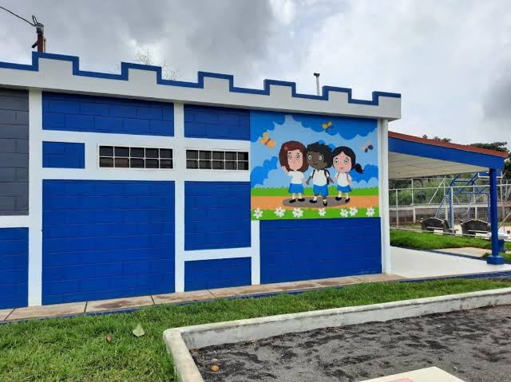
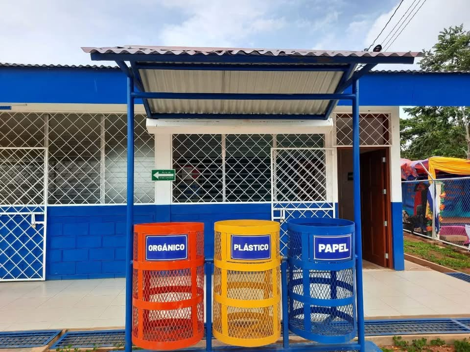
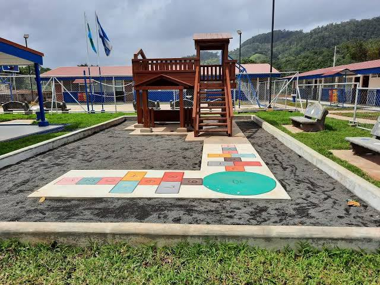
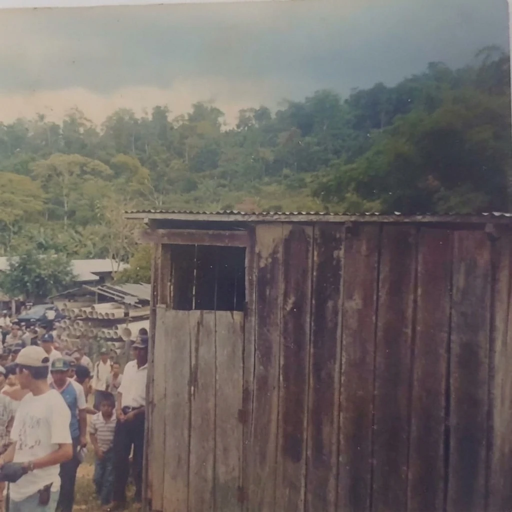
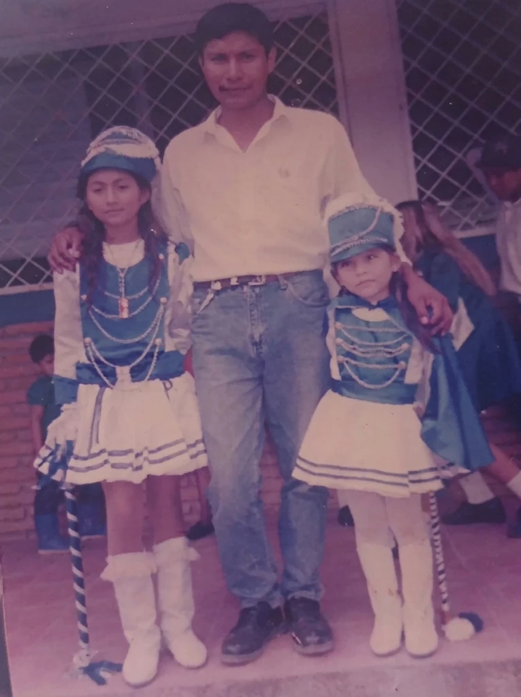

🎯Nuestra misión
Brindar una educación inclusiva, integral y de calidad, promoviendo valores, respeto, responsabilidad y compromiso, mediante el trabajo conjunto de docentes, estudiantes, familias y comunidad.
Una comunidad educativa que trabaja por una educación de calidad, con valores, respeto y compromiso con el futuro de nuestras niñas, niños y jóvenes.
Conocer nuestros centrosConócenos 📘 Código de Conducta del MINEDEl Núcleo Educativo Rural Nueva Alianza es una comunidad educativa integrada por ocho centros escolares del municipio de El Cuá, departamento de Jinotega. Trabajamos de manera articulada para garantizar oportunidades de aprendizaje, formación integral y desarrollo de niñas, niños, adolescentes, jóvenes y personas adultas de nuestras comunidades.
Nos une el compromiso de educar con valores, respeto y ley, fortaleciendo la participación de las familias, el trabajo de nuestros docentes y el vínculo de cada centro escolar con su comunidad.
Brindar una educación inclusiva, integral y de calidad, promoviendo valores, respeto, responsabilidad y compromiso, mediante el trabajo conjunto de docentes, estudiantes, familias y comunidad.
Ser una comunidad educativa reconocida por su compromiso con la formación integral, la calidad de los aprendizajes, la innovación pedagógica y el desarrollo de las comunidades rurales.
Promover ambientes de aprendizaje seguros, inclusivos y participativos; acompañar el desarrollo de cada estudiante y fortalecer la mejora continua de los procesos educativos en nuestros centros escolares.
Reconocemos a las familias, docentes, estudiantes y líderes comunitarios como parte fundamental de la tarea educativa y del crecimiento de nuestras comunidades.
Acompañamos diferentes modalidades para responder a las necesidades y oportunidades de aprendizaje de nuestras comunidades:
La historia del Centro Escolar Nueva Alianza es fruto de la organización, el esfuerzo y la esperanza de las familias de El Bote. Desde una pequeña casa comunitaria hasta la infraestructura actual, generaciones de pobladores, docentes y estudiantes han contribuido a mantener viva la educación.
Se construyó una sencilla casa comunitaria de madera en un terreno cuyo propietario, don Pedro Pablo Tinoco, autorizó su uso para fines comunitarios. Las familias aportaron madera y zinc. La construcción tenía piso de tierra, techo de zinc y mobiliario rústico. Estaba frente a la Iglesia Betania, donde actualmente se encuentra la casa de don Francisco Ortuño.
La memoria de la comunidad recuerda experiencias de alfabetización y enseñanza básica a cargo de alfabetizadores y docentes comunitarios. También se recuerda a una maestra llamada Teresa, procedente de Matagalpa.
Comenzó de manera organizada la enseñanza primaria con primer grado y la educación de adultos, sostenidas con el apoyo económico de los padres de familia. El maestro comunitario empírico Ricardo Antonio Ruiz estuvo a cargo de este proceso. Para entonces, la escuela ya era conocida como Nueva Alianza.
La escuela atendía primero y segundo grado en la mañana, y tercero y cuarto grado por la tarde, debido a que solamente disponía de un espacio de uso múltiple. También se desarrollaban actividades de educación de adultos en casas particulares.
Durante este período se desarrolló la institucionalización ante el Ministerio de Educación (anteriormente MED), el registro oficial del centro y la asignación de las primeras plazas presupuestadas para docentes normalistas. El primer director formal consignado en la información histórica local es William Herrera.
Con el apoyo del Fondo de Inversión de Emergencia (FISE), se construyeron las primeras tres aulas, incluyendo un aula separada y otra de uso multifuncional. En esta etapa se realizó la primera promoción de sexto grado de primaria de la Escuela Nueva Alianza.
Se construyó una moderna infraestructura escolar, inaugurada en julio de 2021, con una inversión aproximada de 26 millones de córdobas. Esta obra representa un importante avance para la educación de la comunidad de El Bote.
Entre los docentes recordados en las primeras etapas también figuran Oscar Arnulfo Pérez Hernández, Martha Toruño, Maribel Lanuza y Pablo Úbeda, procedente de San Rafael del Norte. La comunidad conserva además testimonios de otros educadores que contribuyeron al crecimiento del centro.
Conoce los centros educativos que forman parte del NER Nueva Alianza.
Centro educativo del NER
El espacio áulico es un entorno fundamental para el aprendizaje, la convivencia y la participación. En el Centro Educativo Hugo Chávez Frías se promueven experiencias educativas en un ambiente que favorece la curiosidad, la creatividad y el desarrollo de habilidades, con el acompañamiento cercano de sus docentes.
Centro educativo del NER
Cómo llegarCentro educativo del NER
Cómo llegarCentro educativo del NER
Cómo llegarCentro educativo del NER
Cómo llegarCentro educativo del NER
Cómo llegarCentro educativo del NER
Cómo llegarCentro educativo del NER
Cómo llegarEl mapa muestra únicamente las ubicaciones identificadas en la referencia geográfica del MINED. Selecciona un marcador para consultar el centro y abrir su ubicación en Google Maps.
Sector del Limón: se conserva su enlace de ubicación actual del portal. El archivo de georreferencia del MINED no contiene un marcador identificable con ese nombre, por eso no se inventó una coordenada ni se colocó un pin aproximado.
Conoce las obras, actividades, proyectos y experiencias que forman parte de la vida de nuestros centros educativos.

En la comunidad El Bote, municipio de El Cuá, Jinotega, se inauguró el Centro Educativo Nueva Alianza, una obra que incluyó la construcción de aulas, biblioteca, oficina de dirección y cancha polivalente, además de dotación de mobiliario para fortalecer las condiciones de enseñanza y aprendizaje de nuestra comunidad educativa.
Memoria de un día especial para nuestra comunidad.

Espacios construidos para fortalecer la educación.

El esfuerzo compartido por la educación.

Ambientes al servicio de niñas, niños y jóvenes.

Un espacio para la recreación y la convivencia.

Un recuerdo de la celebración de mayo de 2021.

Seguimos construyendo nuestra historia educativa.

Este espacio reunirá avisos y comunicados oficiales del NER Nueva Alianza.
Compartiremos actividades, celebraciones y experiencias de nuestros centros educativos.
Espacio institucional del NER Nueva Alianza para reunir recursos, materiales y orientaciones que apoyen a los docentes y las familias en la construcción de entornos educativos accesibles, respetuosos y participativos para todas las personas.
Materiales de apoyo y recursos para favorecer el aprendizaje y la participación de todos los estudiantes.
Ingresar al apartado →Fichas, láminas, pictogramas, apoyos visuales y actividades adaptadas para el aula.
Ingresar al apartado →Ideas y orientaciones para diversificar la enseñanza y acompañar distintos ritmos de aprendizaje.
Ingresar al apartado →Orientaciones para identificar y reducir barreras para el aprendizaje y la participación.
Ingresar al apartado →Guías de consulta, documentos de apoyo y orientaciones para docentes y familias.
Ingresar al apartado →Buenas prácticas, actividades y experiencias desarrolladas en nuestros centros educativos.
Ingresar al apartado →Materiales de apoyo para facilitar el acceso, el aprendizaje y la participación de todos los estudiantes.
Documento nicaragüense con orientaciones para adaptar la enseñanza a las características y necesidades del grupo.
Consultar PDF oficial ↗Experiencia de Nicaragua sobre recursos digitales accesibles para aprender en una misma aula, con y sin discapacidad.
Consultar recurso ↗Seleccionar una actividad, identificar qué barrera puede dificultar la participación y preparar apoyos sencillos: instrucciones breves, ejemplos, imágenes, objetos concretos, más tiempo o distintas formas de responder.
Los recursos externos se ofrecen para consulta y adaptación pedagógica; se recomienda revisar cada documento antes de aplicarlo.
Materiales visuales y concretos que pueden apoyar diferentes formas de aprender y comunicarse.
Actividades para reconocer emociones, clasificar colores, ordenar historias, contar con objetos y registrar la participación en los niveles I, II y III.
Abrir cuaderno e imprimir ↗Actividades multinivel de Lengua y Literatura, Matemática, Ciencias Naturales y Ciencias Sociales para 1.º a 6.º grado.
Abrir cuaderno e imprimir ↗Información sobre apoyo docente, asesoría, capacitación y elaboración de materiales didácticos para atender la diversidad.
Visitar Educación Especial Incluyente ↗Referencia para explorar formatos digitales accesibles y apoyos para estudiantes con discapacidad visual o auditiva.
Ver experiencia de Nicaragua ↗Tarjetas con imágenes y palabras, letras móviles, números recortables, objetos para contar, horarios visuales, secuencias de pasos, tableros de comunicación y textos con letra clara y buen contraste.
Preparar materiales reutilizables con recursos disponibles en la comunidad y permitir que cada estudiante los utilice de acuerdo con su forma de aprender y comunicarse.
Para guardar en PDF: abra el cuaderno y seleccione Imprimir → Guardar como PDF en su navegador.
Orientaciones para planificar experiencias flexibles que reconozcan la diversidad del grupo y los distintos ritmos de aprendizaje.
Propone considerar las características individuales y el entorno del estudiante al planificar, enseñar y evaluar.
Abrir guía en PDF ↗Orientaciones para ofrecer información y comunicación en formatos accesibles y variados.
Consultar cuadernillo ↗Marco para reflexionar sobre cómo las escuelas pueden responder positivamente a la diversidad.
Consultar guía ↗Trabajar un mismo tema con distintos niveles de complejidad: reconocer, relacionar, explicar y aplicar. Ofrecer opciones para demostrar lo aprendido mediante conversación, dibujo, escritura, demostración práctica o trabajo en pareja.
Un espacio de consulta para apoyar la identificación de barreras y la búsqueda de respuestas educativas pertinentes, respetuosas y coordinadas.
Describe programas de apoyo, inclusión educativa y recursos especializados disponibles en Nicaragua.
Consultar información oficial ↗Materiales elaborados para ofrecer distintas formas de participar, aprender y demostrar lo aprendido, respetando los ritmos y características de cada estudiante.
Actividades para reconocer emociones, clasificar colores, ordenar secuencias, contar con objetos y registrar la participación en los niveles I, II y III.
Abrir cuaderno e imprimir ↗Propuestas multinivel para Lengua y Literatura, Matemática, Ciencias Naturales y Ciencias Sociales, dirigidas a estudiantes de 1.º a 6.º grado.
Abrir cuaderno e imprimir ↗Observar sin etiquetar; conversar con el estudiante y su familia; identificar barreras del entorno y de la actividad; acordar apoyos concretos; dar seguimiento y ajustar lo que no esté funcionando.
La identificación pedagógica no sustituye una valoración profesional. Proteger siempre la privacidad y evitar publicar diagnósticos o datos personales.
Colección de documentos de consulta y guías prácticas para fortalecer el trabajo inclusivo.
Documento para comprender la inclusión como un enfoque que identifica y reduce barreras en los procesos de enseñanza y aprendizaje.
Descargar PDF ↗Marco nacional con líneas de acción para avanzar hacia una educación para todas y todos.
Consultar PDF ↗Catorce cuadernillos sobre accesibilidad, DUA, pedagogía inclusiva, familia y comunidad, y evaluación.
Explorar colección ↗Fascículos en español sobre inclusión, TEA, ajustes razonables, TDAH, discapacidad visual y gestión de emociones.
Consultar fascículos ↗Comenzar por los documentos del MINED Nicaragua como referencia nacional. Complementar con los materiales de UNICEF y UNESCO para ampliar ideas, ejemplos y estrategias de aula.
Espacio para visibilizar iniciativas y buenas prácticas que promuevan la participación y el aprendizaje en nuestros centros.
Informe de UNICEF sobre una experiencia piloto con herramientas digitales accesibles en los primeros grados.
Leer experiencia ↗La colección de cuadernillos incluye orientaciones para fortalecer la participación de familias y comunidad.
Explorar cuadernillos ↗Registrar actividades que hayan funcionado, describir el apoyo utilizado y el aprendizaje observado, sin exponer datos personales. Las fotografías de estudiantes solo deben publicarse con la autorización correspondiente.
Un espacio para organizar, consultar y compartir materiales pedagógicos y documentos de apoyo para los docentes, estudiantes y familias del NER Nueva Alianza.
Explora las colecciones por tema o utiliza el buscador.
Programas de estudio, mallas curriculares y orientaciones educativas.
Abrir colección →Planes diarios, mensuales, por unidad y propuestas de actividades.
Abrir colección →Fichas, juegos, actividades y recursos para los primeros aprendizajes.
Abrir colección →Guías, ejercicios y materiales organizados para el trabajo multigrado.
Abrir colección →Documentos y recursos de apoyo para la continuidad de los aprendizajes.
Abrir colección →Instrumentos, pruebas, rúbricas y listas de cotejo.
Abrir colección →Formatos, registros y modelos para la gestión escolar.
Abrir colección →Colección para consultar programas de estudio, mallas curriculares y orientaciones educativas oficiales.
Este espacio está preparado para incorporar documentos PDF y otros materiales de consulta.
Los archivos se publicarán cuando sean compartidos y revisados para mantener su identificación y procedencia.
Los materiales publicados aparecerán aquí.
Material de apoyo para organizar la enseñanza y las actividades de aprendizaje.
Aquí se podrán publicar planes diarios, mensuales, por unidad, secuencias didácticas y propuestas para aulas multigrado.
Los documentos se incorporarán conforme sean compartidos y revisados por la dirección.
Los materiales publicados aparecerán aquí.
Recursos lúdicos y didácticos para acompañar el desarrollo y los primeros aprendizajes.
Se podrán agregar fichas, cuentos, juegos, canciones, láminas, actividades y materiales para trabajar con niñas y niños.
Los recursos se incorporarán conforme sean compartidos y revisados por la dirección.
Los materiales publicados aparecerán aquí.
Colección de materiales para apoyar la atención de los grados y grupos multigrado.
Se podrán organizar guías, lecturas, ejercicios, actividades y materiales de Lengua y Literatura, Matemática, Ciencias Sociales y Ciencias Naturales.
Los materiales se incorporarán conforme sean compartidos y revisados por la dirección.
Los materiales publicados aparecerán aquí.
Recursos de consulta y apoyo para las asignaturas y grados de Secundaria a Distancia en el Campo.
Se podrán publicar guías de estudio, lecturas, ejercicios, actividades y documentos de apoyo para los estudiantes.
Los materiales se incorporarán conforme sean compartidos y revisados por la dirección.
Los materiales publicados aparecerán aquí.
Instrumentos para acompañar, valorar y dar seguimiento a los aprendizajes de los estudiantes.
Se podrán incorporar pruebas, rúbricas, listas de cotejo, escalas de valoración y otros instrumentos pertinentes a cada nivel y modalidad.
Los documentos se incorporarán conforme sean compartidos y revisados por la dirección.
Los materiales publicados aparecerán aquí.
Formatos y documentos de apoyo para organizar los procesos de gestión de los centros educativos.
Se podrán agregar modelos de registros, formatos de trabajo, plantillas y documentos administrativos de uso autorizado.
Antes de publicar, se revisará que los archivos no contengan datos personales o información confidencial de estudiantes y familias.
Los materiales publicados aparecerán aquí.

Un recuerdo de los primeros espacios que dieron inicio a la historia educativa de Nueva Alianza.
Fotografía que forma parte de la memoria de nuestra comunidad educativa.

Una memoria de las actividades culturales y estudiantiles de nuestra escuela.
Inauguración del Centro Educativo Nueva Alianza, Comunidad El Bote, El Cuá, Jinotega, con la construcción de aulas, biblioteca, oficina de dirección, cancha polivalente y dotación de mobiliario para fortalecer las condiciones de enseñanza y aprendizaje de nuestra comunidad educativa.
Registro fotográfico de las nuevas instalaciones del centro educativo.
Registro fotográfico de las nuevas instalaciones del centro educativo.
Registro fotográfico de las nuevas instalaciones del centro educativo.
Registro fotográfico de las nuevas instalaciones del centro educativo.
Registro fotográfico de las nuevas instalaciones del centro educativo.
Registro fotográfico de las nuevas instalaciones del centro educativo.
Registro fotográfico de las nuevas instalaciones del centro educativo.
Espacio institucional para organizar, compartir y dar seguimiento a los procesos de formación, actualización e intercambio pedagógico de los docentes del NER Nueva Alianza.
Espacios de reflexión, actualización e intercambio de experiencias para fortalecer las prácticas pedagógicas y la calidad educativa.
Conoce más →Registro de capacitaciones, temas desarrollados, participantes y recursos.
Ingresar al apartado →Espacio para documentar talleres pedagógicos, actividades prácticas y experiencias.
Ingresar al apartado →Orientaciones, agendas, acuerdos y seguimiento de los consejos técnicos.
Ingresar al apartado →Espacios de reflexión y recreación de las experiencias docentes, con énfasis en las prácticas de aula, el reconocimiento de buenas prácticas pedagógicas y las lecciones aprendidas.
Los Encuentros Pedagógicos de Interaprendizaje (EPI) son concebidos como espacios de reflexión y recreación de las experiencias de los docentes, haciendo énfasis en las prácticas en el aula, rescatando las buenas prácticas pedagógicas y las lecciones aprendidas.
Encuentros: Se desarrollan empleando la metodología de taller.
Pedagógicos: Se abordan elementos disciplinares y metodológicos de las asignaturas de los programas de estudio.
Interaprendizaje: Se propicia el intercambio de experiencias y la actualización de los docentes.
Registro y consulta de los procesos de actualización y fortalecimiento de capacidades docentes.
Se podrán publicar convocatorias, programas, materiales, fechas, listas de participantes y evidencias de cada capacitación.
Los documentos se incorporarán conforme sean compartidos por la dirección.
Registro de talleres pedagógicos desarrollados en el NER Nueva Alianza, con fotografías, temas abordados y experiencias de aprendizaje compartidas por los docentes.
Taller pedagógico · Primer grado
Docentes de primer grado participaron en una jornada de fortalecimiento de la escritura inicial mediante el uso de la letra script. Se compartieron estrategias y actividades prácticas para favorecer el desarrollo de habilidades de escritura en las niñas y los niños, fortaleciendo los procesos de enseñanza y aprendizaje.
Taller pedagógico · Primer grado
Jornada de formación orientada al conocimiento y aprovechamiento de la propuesta NicaMate 2 para fortalecer la enseñanza de Matemática en primer grado. Se abordaron estrategias didácticas para desarrollar el pensamiento lógico-matemático, favorecer el sentido numérico, el conteo y la comprensión de situaciones sencillas, mediante actividades prácticas, recursos concretos y experiencias de aprendizaje acordes con el nivel de las niñas y los niños.
En este apartado se irán incorporando fotografías, agendas, guías de trabajo, recursos didácticos y productos elaborados durante los próximos talleres.
Apartado para organizar el trabajo colegiado, la reflexión pedagógica y los acuerdos de los consejos técnicos del NER.
Se podrán publicar convocatorias, agendas, actas, acuerdos, compromisos y seguimiento de cada consejo técnico.
Los documentos se incorporarán conforme sean compartidos por la dirección.
Conoce las modalidades educativas que se desarrollan en los centros del NER Nueva Alianza y los espacios de atención a niñas, niños, jóvenes y personas adultas.
Atención educativa a niñas y niños en los primeros niveles de su desarrollo.
Ingresar al apartado →Atención de los aprendizajes de primaria mediante la organización multigrado.
Ingresar al apartado →Oportunidades educativas comunitarias para jóvenes y adultos.
Ingresar al apartado →Procesos de aprendizaje de lectura, escritura y conocimientos básicos.
Ingresar al apartado →Continuidad educativa de secundaria con atención en el contexto rural.
Ingresar al apartado →Espacio para presentar la organización, experiencias y actividades de Educación Inicial en los centros del NER Nueva Alianza.
Aquí se podrán incorporar información de los niveles atendidos, actividades pedagógicas, proyectos, recursos y fotografías.
La información específica de cada centro se agregará conforme sea compartida por la dirección.
Espacio para compartir la organización pedagógica y las experiencias de Educación Primaria Multigrado.
Aquí se podrán publicar organización de grados, estrategias de enseñanza, planificaciones, materiales didácticos, proyectos y evidencias de aprendizaje.
Los contenidos se incorporarán conforme sean compartidos por la dirección.
Espacio destinado a presentar las acciones y experiencias de Primaria Comunitaria en el marco de la Educación de Jóvenes y Adultos (EDJA).
Aquí se podrán agregar información de atención educativa, organización de grupos, materiales, actividades y logros de los protagonistas.
La información se incorporará conforme sea compartida por la dirección.
Espacio para documentar los procesos de alfabetización y las oportunidades de aprendizaje de jóvenes y adultos.
Aquí se podrán publicar orientaciones, materiales de lectura y escritura, actividades, registros y experiencias de alfabetización.
Los documentos y evidencias se incorporarán conforme sean compartidos por la dirección.
Espacio para compartir la organización y las experiencias de continuidad educativa de secundaria en las comunidades rurales.
Aquí se podrán incorporar información de grados atendidos, jornadas, actividades académicas, recursos, proyectos y evidencias de aprendizaje.
Los contenidos se agregarán conforme sean compartidos por la dirección.
Consulta y descarga materiales de apoyo preparados para acompañar el aprendizaje, la inclusión y el trabajo pedagógico en los centros educativos del NER Nueva Alianza.
Propuestas lúdicas para favorecer la participación, la exploración y los aprendizajes de niñas y niños de Educación Inicial.
Actividades y propuestas de trabajo para atender distintos ritmos y niveles de aprendizaje en aulas de Primaria Multigrado.
Accesos rápidos a plataformas institucionales para consultar orientaciones, materiales y recursos educativos.
Portal oficial del Ministerio de Educación de Nicaragua.
Ingresar al MINED ↗Portal educativo con recursos, materiales y plataformas de aprendizaje.
Ingresar a Nicaragua Educa ↗Los nuevos documentos se irán incorporando a esta sección conforme sean revisados y publicados por la dirección del NER.
Este es el espacio para comunicarse con el Núcleo Educativo Rural Nueva Alianza y conocer la ubicación de nuestro centro sede.
NER Nueva Alianza
Comunidad El Bote, municipio de El Cuá, departamento de Jinotega, Nicaragua.
Consulta la ruta para llegar al Centro Educativo Nueva Alianza, en la comunidad El Bote.
WhatsApp institucional:
8795 7080 · Enviar mensaje por WhatsApp
Correo electrónico:
maltezjoshua261@gmail.com
Lunes a sábado
De 7:30 a. m. a 4:00 p. m.